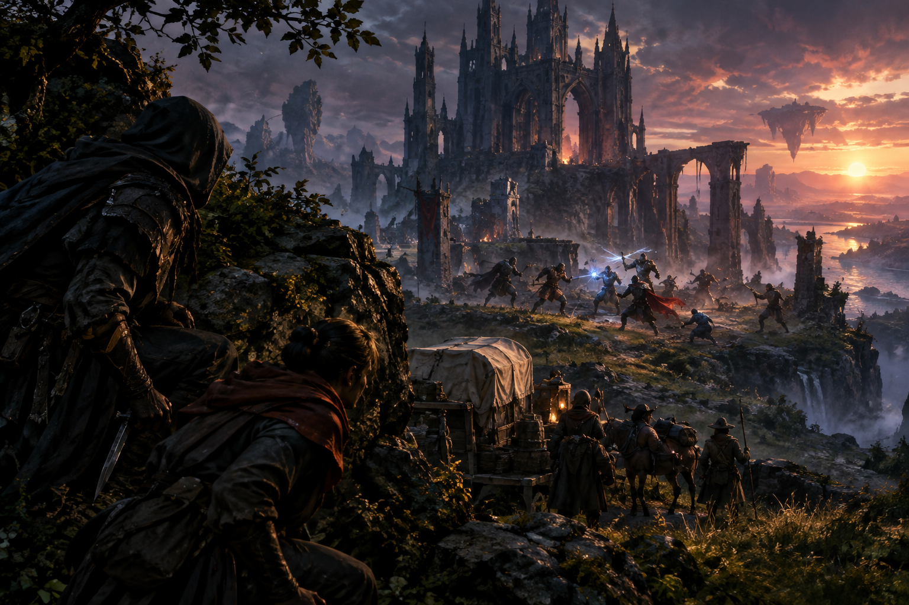
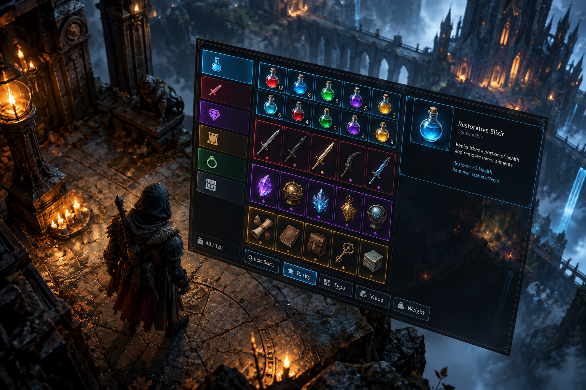

Beyond Remakes: How Nostalgia Drives a New Wave of Originality in 2026 Gaming Culture
With nostalgia fueling trends across all genres, 2026’s gaming culture is seeing not just a return to retro, but an infusion of classic sensibilities into boldly original games. What’s really behind this surge—and what does it mean for the next generation of players and designers?
READ THE STORY ↗
The Modular PC Revolution: How Swappable Components Are Changing Gaming Builds in 2026
In 2026, modularity isn’t just a buzzword: it’s reshaping how PC gamers build, upgrade, and maintain their rigs. With innovations in cases, plug-and-play graphics, and user-friendly motherboards, we examine what the modular revolution means for PC gaming’s present and future.
READ THE STORY ↗
The Return of Danger: How Open-World PvP Is Redefining MMORPGs in 2026
In 2026, open-world PvP is making a dramatic comeback in MMORPGs. New titles and revitalized classics are embracing the chaos—here's why the risk, reward, and rivalry of player conflict once again sit at the heart of online worlds.
READ THE STORY ↗
Beyond the Bag: How Innovative Inventory Systems Are Transforming RPG Gameplay
From endless scrolling to seamless looting, inventory management is no longer the burden it once was—and it’s redefining how players interact with virtual worlds.
READ THE STORY ↗
Split Right Down the Middle: How Modern Consoles Are Powering the Resurgence of Split-Screen Co-Op
A decade ago, split-screen gaming seemed relegated to nostalgia. Now, blockbuster studios and hardware innovators are bringing local co-op back in force. We explore the technical breakthroughs, design philosophies, and player sentiment shaping the new wave of split-screen on console.
READ THE STORY ↗